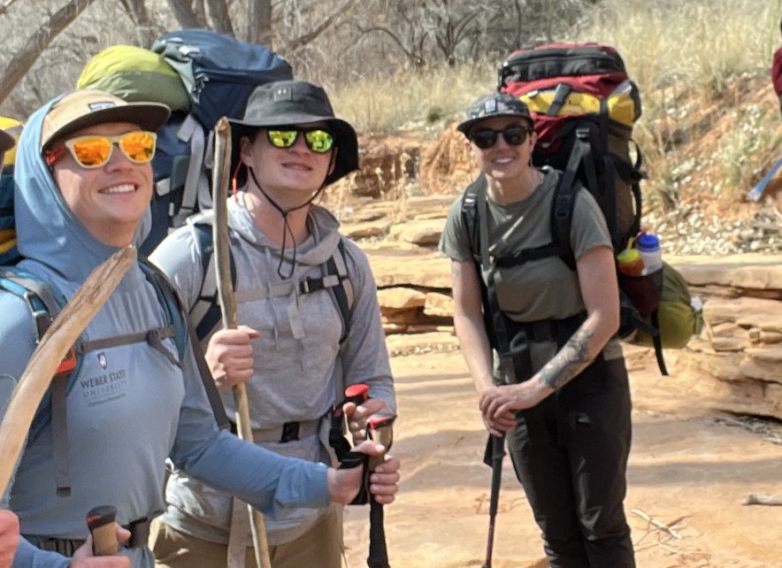
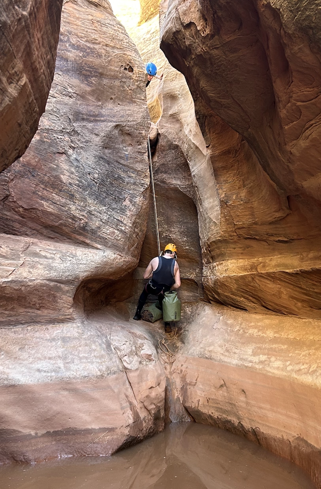
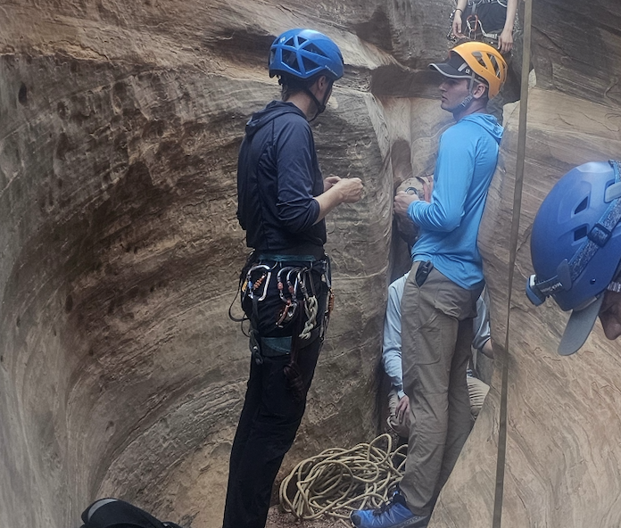

This is my manager Hayley. She is one of my few bosses at the Outdoor Program. She is one of the coolest people that I know. I have been lucky enough to work with her for almost two years and directly for her for nearly a year now.
I first met Hayley when I was a participant on Experience Weber, a camping trip for incoming students, in 2023. She was in charge of it so I met her and didn't think much about it. She was just one of the people running the event I was at.
"It takes time to reach another’s “core self,” the most intimate details
about another person." (Carpenter, 2016)


The day after the trip was my first day working for the Outdoor Program. When I went in, she was one of the first people I talked to. I ended up helping her with stuff for most of my first week. Our conversations started as very basic small talk. Mostly just her asking me about school and some prior work experience.
Soon after that my other manager came back so I didn't work with Hayley too much. I would still see her a few times a week and make some small talk. It wasn't until about last January when she started recruiting me to work for her that we started talking more. During my interview our talking got more personal as we connected on a deeper level about more topics.
Once I started working directly for her, our relationship grew significantly. For training we went down to the Moab area. During the six hour drive, we talked the entire time. We definately got more personal and deeper into the onion. We talked about our childhoods and families and future plans.
She is the closest I have ever gotten to a manager. I tell her a lot more than I tell most of my coworkers. We have a great relationship and I love working with her. I've also spent a lot more time in harder situations with her than other bosses. Getting through tough situations together helps bring a higher level of trust. That's how our relationship has developed over time to become more personal with one and other.
